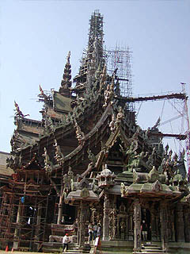

←参考資料；ワットシェンクアン（ラオス、ヴィエンチャン）
Sanctuary of Truth/Chonburi
タイ超絶地獄列伝、最後の訪問地はサンクチュアリオブトゥルースだ。 直訳すると真実の聖域とでもいうのだろうか。実に心洗われる胡散臭いネーミングである。 場所はパタヤビーチの北、いわゆる観光客がどっと押し寄せるエリアからは少し離れているが周辺にもゲストハウスやリゾートマンション、売店、クリーニング屋などが点在しており、パタヤの喧噪はイヤだけど、パタヤから離れられない人用の裏パタヤのような微妙な地区。 そんなパタヤの外れの岬にある真実の聖域とは何ぞや、とお思いだろう。 名前からして怪しげな新興宗教の修行道場か何かのようでもあるが、たぶん半分正解。 現時点では建設中の建物がポツーンと建っているだけなのである。 この建物が凄いのなんのって。 詳しい事は追々話すとして、とにかく中に入ってみよう。 入口のゲートの横にインフォメーションセンターのような建物があり、ここで結構な入場料を払うと領収書代りのシールが貰える。 このシールを胸に貼ると受付は完了。岬の先まで目指す。 入口のインフォメーションにはこんな仏像が無造作に放置してある。見ればみな木像だ。 この辺りは岬からかなり高台になっているので岬の辺りの様子は伺えない。 しばらく行くと見晴台があり、そこから見下ろすと・・・ 波打ち際に建つ仏塔のような異様な建物が見えた。工事中らしく先端には足場が架けられている。 海をバックに、出来過ぎの好ロケーションである。 さらに坂道を下って行く。入口からはかなり距離があるがその間にも色々と出来るんだろうか。 やっと建物の脇につき、その様相に唖然。  デカい。とにかくデカい。説明によると幅と奥行き100メートル、高さは105メートルもあるという。 バンコクにある、その高さで有名なワットアルンの仏塔が79メートル。 高層ビルが立ち並ぶバンコクにあっても高いな〜と思えるサイズだがそれより遥かに高い。 しかも。 その壁面という壁面屋根という屋根にはギッチリ木彫りの彫刻が施されている。 施されているというよりも木彫品を後付けしてあるので、物凄い装飾過多な建物になっている。 しかもその木彫装飾のほとんどが人体像。 いや、どちらかというと人体の合間に建物が埋まっているといってもいいでしょう。 で、建物脇にある作業所のようなところで再び係員の説明を受ける。曰く １.ここは建設中なので中に入るには必ずヘルメットを着用する事 2.内部は危険なので走り回らない事 3.入口で貰ったシールを必ず貼る事 4.見学の後はここに戻って来てヘルメットを返す事 5.その後、イルカと遊ぶ事 イルカは良く判らんがとにかく何をするにもアバウトなお国柄とは思えない厳しい注意事項の数々である。 お約束嫌いタイの人達だったら2つ以上のお約束は忘れちゃうでしょう。 かくいう私も英語でガチャガチャ言われたのでもっと注意事項があったような気がしたが最後の方はあまり聞いちゃいませんでした。 もしかして観光客がヤンチャして死人でも出たのか？ というわけで、煩い注意事項も確認したので、いざ謎の建物にむかうぞ！ 近付いて見上げると様々な木彫像がこぼれ落ちて来そうである。 さっきからず−っと気になってたんですけど。これって・・・ バロック漫画家、ふくしま政美の描く変態エロ劇画の大傑作「聖（勿論セイントと読むのだよ）マッスル」に登場するマッチョマンで組み立てられた「人間城」みたいじゃないですかああ。ぐうえええ〜っ あっ！以前ルアンプ−の変態庭園で見た人発見。これってタイの伝統的なモチーフだったのかあ。
←参考資料；ワットシェンクアン（ラオス、ヴィエンチャン）
さて、建物に近付けば近付く程その木彫像の圧倒的な量感に圧倒される。 こぼれ落ちそう感が段々強まってくる。ああ、だからヘルメット貸してるんだ・・・ そんな中に和服の女性を発見。 あまりの彫刻の量に圧倒されていたが、良く見ればタイだけでなくインド中国クメールなど様々な様式の彫刻が織り込まれている。 しかもアジア各国の神様仏様神話の登場人物などなどが大集合の様相を呈している。 で、いよいよ内部に入ってみる。 内部も工事中で中央に足場が架けてあった。
中は仕切りのない十字形の平面を持つ広い空間だ。もしかしたらこの後、内部の壁が取付けられるのかも知れないが。 中心には丸い厨子のようなモノがあり、ここが完成したら特別な場所になるであろうことが伺える。 それにしても何という高さだろう。遥か上に天井がありそこにも様々な装飾が施されている。しかも全部木彫。 木像建でこれだけの高さを持つ室内空間はアジアでも滅多に見られない。世界最大の木像建築と謳われる奈良東大寺の大仏殿だってこんなに天井は高くない。 その荘厳さ、装飾のしつこさはヨーロッパのバロック教会を思い起こさせる。 この高さだったので外から見た時点では結構期待していたのだが、2階3階はとてもありそうにない。 それにしてもこの過密具合は何だ。壁という壁が全て彫刻で埋め尽くされている。 岬の先端の部分はクメール彫刻風の人体像で埋め尽くされていて、さしずめロダンの地獄門を彷佛とさせる不気味さだった。 というよりもやっぱ人間城・・・ 巨大な象さん。もっちろんタイですから。 外からは強い日射しが照りつけている。 陽が洩れている部分もそのうち彫刻で埋め尽されるのだろうか。 天井に取付けられた円状の飾り。放射状のモノは様々な神様のようだ。 出口は艶かしい女性が満載の女体ゲート。ここもまた聖マッスルテイスト満点。 一体何人の人体が奉納されているのだろうか？ この人体による装飾過剰具合はバロック教会と比べるよりもやっぱり聖マッスル・・・ 
建物の横では彫師の皆さんが鑿を振るっていた。 建設が始まって20年経つが完成まではあと10年はかかるという。 まさにタイのサグラダファミリア・・・というか人間城。 結局、この建物が完成した際、何になるのかはさっぱり判りませんでした。 後日、ここのホームページを見てみたのだが、何やら小難しい事が書いてあって余計判らなくなった。 めんどくさいので翻訳サイトにぶち込んだらここの目的は「東洋の哲学および宇宙論によって啓発を描写すること」なんだそうである。 コレ、何を云っているかわかる人いますか？ 恐らく東洋思想万歳宮殿みたいな、日本でいえば哲学堂公園みたいなもんなんでしょうか。 あ、さらに訳が判らなくなってきたか・・・ ただ、唯一のヒントはここのオーナーがムアンボランというバンコク近郊の世界最大規模のテーマパークのオーナでもあるという事。 このムアンボランも単なるテーマパークではなくて、所々にタイガーバーム根性が注入された像があるかなり変なトコロなのだが一応観光施設。 というわけで一応ここも観光施設として運営していくのではなかろうか。 この先、オーナー氏の莫大な財産と膨大な妄想汁がどう注ぎ込まれるのか大変楽しみである。 もっとも言い出しっぺのオーナーは既に亡くなってしまったのだが・・・ ・・・あ、そうだ。イルカと遊ばなきゃ。 それじゃ、この辺で失礼します。
おしまい
泰国超絶地獄列伝 珍寺大道場 HOME